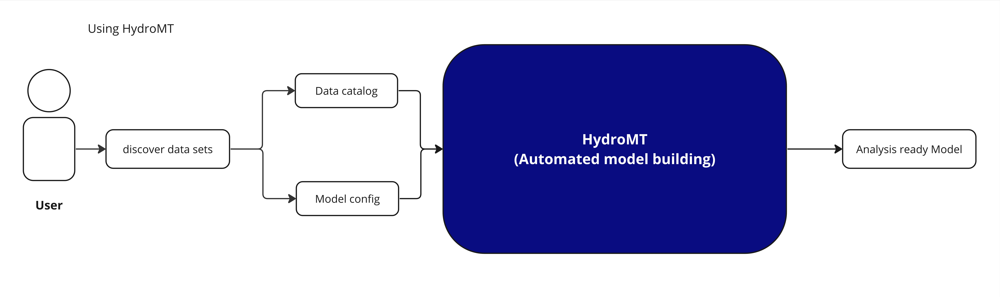

How to use HydroMT ?#
HydroMT and plugins#
More often than not, we use HydroMT together with a plugin to work with specific model software. HydroMT core then provides the command line and Python interface, data handling via the data catalog (and adapters) and generic GIS methods.
The plugin provides model-specific GIS methods and allows to read and write model data in the model’s native format.
Here is what happens under the hood when building a model:
Common usage#
The most common usage of HydroMT is to build a model from scratch and to update and visualize an existing model. Here, a high-level example of how to build a model using HydroMT is provided. Building a model from scratch with HydroMT involves the following generic steps:
Define the input data in a yaml data catalog file or selects available datasets from a pre-defined data catalog.
Define the model region which describes the area of interest. The model region can be based on a simple bounding box or geometry, but also a (sub)(inter)basin that is delineated on-the-fly based on available hydrography data.
Configure the model setup in an yaml configuration file. A HydroMT yaml configuration file represents a reproducible recipe to build a model by listing (in order of execution) the model methods and their arguments. These methods and their arguments are described in the documentation.
Run the HydroMT build method from either command line (as shown in the figure) or Python.

HydroMT interface#
HydroMT provides both a command line interface (CLI) and a Python application programming interface (API) to build and update models. Here are examples of how to use both interfaces to build a model from a configuration file.
$ hydromt build wflow_sbm "./path/to/wflow_model" -d "./path/to/data_catalog.yml" -i "./path/to/build_options.yaml" -v
from hydromt_wflow import WflowSbmModel
from hydromt.readers import read_workflow_yaml
# Instantiate model
model = WflowSbmModel(
root="./path/to/wflow_model",
data_catalog=["./path/to/data_catalog.yml"],
)
# Read build options from yaml
_, _, build_options = read_workflow_yaml(
"./path/to/build_options.yaml"
)
# Build model
model.build(steps=build_options)
If you use the command line interface, only a few high-level commands are available to build and update models or export data from the data catalog. If you use the Python API, you can also access the underlying methods of HydroMT to read data from a catalog, perform GIS operations or write your own plugin.
After this overview, please refer to the user guide for more detailed instructions on how to use HydroMT and the documentation of the plugin you are using.